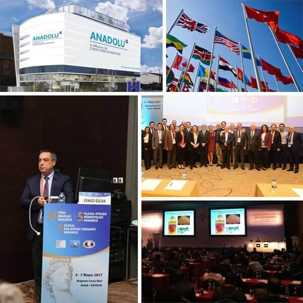
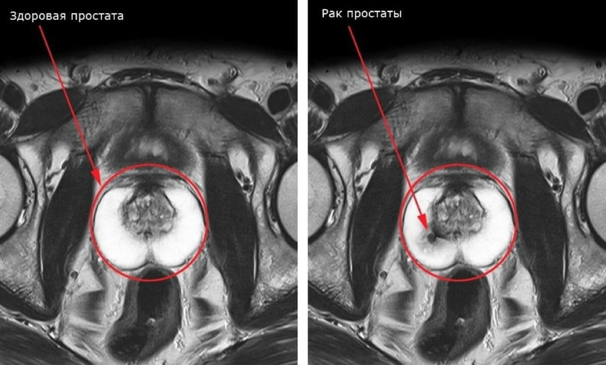
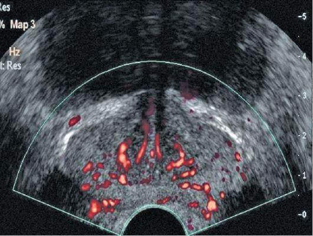
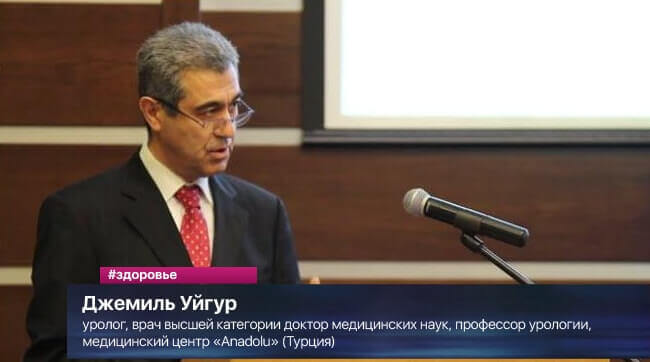

Онищенко Г. Г.: «Наконец-то стало возможным вылечить простатит дома всего за 1 неделю». Так экс-руководитель Роспотребнадзора прокомментировал новый турецкий препарат от простатита, который показали на ХVI международной конференции здравоохранения.
ХVI международная конференция здравоохранения, проходившая в Стамбуле на базе медицинского центра Anadolu, стала богатой на новинки и инновации. Однако наибольшее внимание медиков было сосредоточено на новом препарате от простатита, который позволяет оздоровить простату всего за 1 неделю в домашних условиях без антибиотиков и ректального массажа. Примечательно, что препарат распространяется по льготной цене (благодаря специальной программе исключительно для жителей России).

Почему проблема больной простаты так актуальна для нашей страны?
По статистике, 63% российских мужчин старше 35-40 лет имеют проблемы с мочеиспусканием и потенцией, которые являются основными симптомами запущенного простатита. У остальных – простата также не в порядке, но до характерных симптомов пока не дошло. По той же статистике медиков, патологические процессы в простате (в той или иной мере) наблюдаются у 98% российских мужчин старше 35-40 лет.
Сам по себе простатит – это прямая дорога сначала к аденоме простаты, а потом к импотенции и раку. Проблема осложняется еще тем, что лечение от простатита сложное и длительное. Необходимо принимать большое количество антибиотиков и пройти курс ректального массажа (врач через анальное отверстие пальцем массирует пациенту простату ежедневно на протяжении 2 недель). Но даже при успешном лечении простатит в 87% случаев возвращается снова в течение 1 года.


Турецкими учеными было найдено уникальное решение по лечению простатита, которое позволяет восстановить простату раз и навсегда всего за 1 неделю без посещения врачей и унизительного массажа, полностью в домашних условиях
Препарат на конференции представил известный турецкий уролог, врач высшей категории доктор медицинских наук, профессор урологии Джемиль Уйгур.

Основа препарата – кора дуба, известная турецким врачевателям уже больше 500 лет, широко используется местными жителями для лечения мужских заболеваний.
Первые сведения о коре дуба как о средстве от простатита и проблем с мочеиспусканием содержатся в Трактате турецкой народной медицины, датированной 1494 годом. Из коры приготавливали специальный отвар, который мужчины пили ежедневно на протяжении 30-40 дней. За это время снимались основные симптомы простатита.
В 70-х годах прошлого столетия турецкие ученые изучили состав коры дуба и пришли к выводу, что она действительно помогает эффективно воздействовать на простату, а также выработку мужских половых гормонов. Однако в виде отвара действие её незначительны. Кора содержит полезные для мужчин вещества, но в очень малых количествах.
Решить эту проблему помогли современные технологии холодной экстракции, которые позволяют вырабатывать из растений максимум биологически активных веществ при минимальной термической обработке. Новый турецкий препарат, который был назван Урелайн, содержит почти в 4000 (!) раз больше биологически активных веществ в сравнении с обычным красным корнем. Именно этим и объясняется его высокая эффективность.
Как Урелайн прокомментировал Онищенко Г.Г.?
«Безусловно, это инновационное решение практически вечной проблемы. Наконец-то стало возможным вылечить простатит дома за 1 неделю при этом по льготной цене. Причем исключительно натуральным препаратом, без вредных антибиотиков и какой-либо химии. Урелайн можно принимать без назначения врача и использовать для самостоятельного лечения».
Результаты клинических исследований препарата в Турции
- Нормализация состояния предстательной железы – 100% исследуемых
- Лечение хронического простатита – 100% исследуемых
- Усиление и восстановление потенции – 100% исследуемых
- Нормализация мочеиспускания – 96% исследуемых
- Улучшение качества спермы – 94% исследуемых
- Улучшение общего самочувствия – 100% исследуемых
Результаты проводились в Стамбульском медицинском университете в 2016-2017 годах. Всего в них участвовало около 3000 мужчин разных возрастов.
Урелайн по льготной цене можно приобрести только в России?
Как пояснили представители российской делегации, в ходе переговоров было получено соглашение о поставке Урелайн без таможенных пошлин и без дополнительной наценки производителя. Таким образом в стране была организована льготная программа, благодаря которой каждый российский мужчина сможет получить Урелайн вне зависимости от своего финансого состояния – по льготной цене.
Ввиду некоторых бюрократических тонкостей вероятное появление препарата в российских аптеках состоится не раньше 2019 года. Однако уже сейчас его можно заказать на официальном сайте, недавно созданным по инициативе Минздрава РФ.
Добавлено:
В связи с большим количеством заказов, министерство было вынуждено изменить условия проведения акции. В данный момент она действует лишь до 20 мая
.
До указанной даты (включительно) оригинальный препарат Урелайн можно заказать через официальный сайт по льготной цене всем нуждающимся в помощи мужчинам!
Владимир Д.
Спасибо за статью. Очень интересно. Простатит уже замучил. 4 года победить его не могу. Заказал Урелайн. Попробую полечиться. Повезло что сейчас такая акция.
Михаил
Если простатит не лечить могут быть плохие последствия. У меня знакомый умер от аденомы простаты. 46 лет. 2 детей.
Станислав Осипов
Полностью подтверждаю – отличный препарат. Покупал его, когда летом ездил отдыхать в Турцию, за 200 долларов. До этого уже часто бегал в туалет и мучился. Стала потенция пропадать. После курса приема Урелайна все прошло, потенция усилилась, проблемы с мочеиспусканием пропали!
Наталья Ш.
Подруга рассказывала, у нее муж месяц назад принимал его. Вроде бы ему очень помог. Был то ли простатит, то ли аденома. Тоже говорили, что можно неожиданно в рак все это перейти.
Иван Кузнецов
Заказал. Спасибо. Действительно получился по льготной цене. Заказывал на указанном сайте
Артем Г.
Заказал) Живу в сибири. Обещали в течение 5 дней доставить. Удобно, когда такая быстрая доставка.
Константин
Мне 52 года. Начались проблемы с мочеиспусканием. Пошел к врачу. На последнем обследовании обнаружили аденому с высокой вероятностью перехода в рак. Принимал Урелайн примерно 3 недели. В итоге аденома прошла. Стал себя намного лучше чувствовать. Повысилась работоспособность и настроение.
Максим Молянов
Смотрел передачу недавно про простатит. Там тоже про это средство турецкое говорили. Сказали, что нового поколения и вообще чуть ли не «спасение человечества». Многие врачи его рекомендовали.=
Роман У.
Принимал для лечения простатита. Тоже выписывал врач. Рассказывал, что современный отечественный препарат, который намного лучше всех имеющихся. Помог. Покупал на указанной сайте примерно 1,5 месяца назад без всяких акций.
Виктор
Спасибо. Интересно.
Светлана Захарова
Надо мужу заказать. За такую цену почему бы не попробовать.
Тимур
От простатита спасает очень хорошо. Был хронический. Лечил несколько лет. Все безрезультатно, пока не попробовал Урелайн. От простатита не осталось и следа. Пропали тянущие боли, нормализовалось мочеиспускание и потенция.
Павел С.
Средство классное!!! 7-летний хронический простатит прошел за 2 недели! До этого лечил его 3 раза, все разы было мучительно, а с Урелайном оказалось очень просто. Турки приятно удивили.
Арсений Талай
Спасибо!